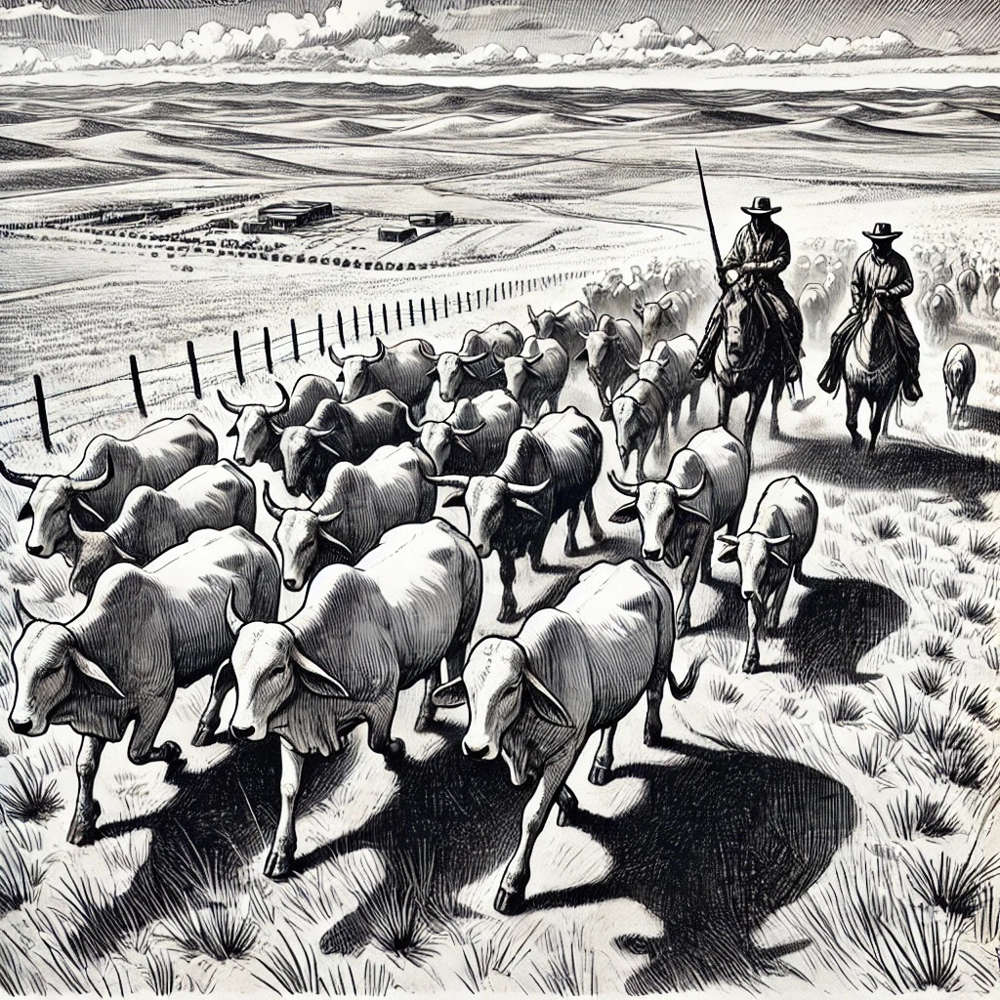
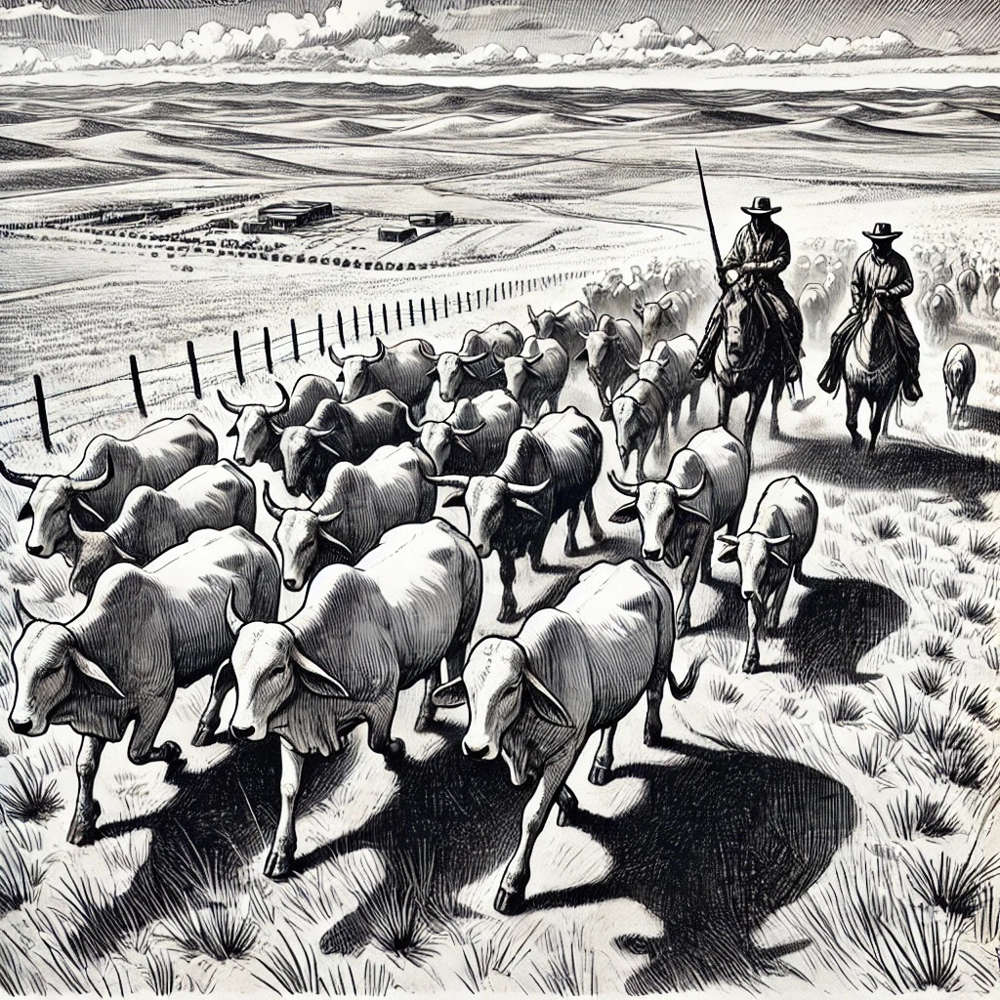

Revolutionize Your Livestock Management
Discover Ñutag – a smart, reliable ear tag system designed to maximize efficiency and ensure animal well-being.
Discover Ñutag – a smart, reliable ear tag system designed to maximize efficiency and ensure animal well-being.
Tartarus Dynamics LLC is a visionary partnership founded by Rubén Alvarenga, Marvin Largo, and Reece Meakings. We create cutting-edge agricultural technology solutions that drive efficiency and transform the farming sector.
Our mission is to empower farmers and ranchers with modern, reliable, and user-friendly tools for superior livestock management.
Ñutag is engineered to revolutionize livestock management by offering:
 

Interested in discovering how Ñutag can transform your operations? Reach out at: info@tartarusdynamics.com